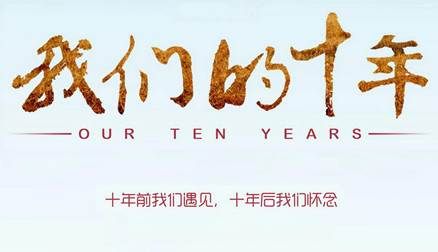

你有想过自己10年后会变成怎么样吗？是在家相夫教子的好贤妻、懒得保养的黄脸婆，或是依旧保持品味的魅力女性？还是家庭事业双丰收的好男人、或是整天撸的单身汉？那就赶紧来测试一下，从下面的心理测试题中看看十年后的你会变成什么样的人？ （答案在下方哦↓↓↓）

【选好后往下看！答案在下面】
你没有想到过自己的人生会变成什么样子，至少不是现在这个样子。不管十年前还是十年后，你都要是美的，可是事与愿违，你是个懒的想怎么过活的人，慵懒的你十年之后在人生的道路上失去自我的可能性极大，日子慢慢就消磨了你人生的目标，你不在想去可以打扮自己，喜欢化妆保养的那个曾经的你不不知道哪去了……你也不会再去关注这季流行什么，保养很嫌麻烦了，干脆自暴自弃，当个黄脸婆更是直接。
每个人都免不了曾经想过嫁入豪门做个衣食无忧的少奶奶，只管自己美，保养、花钱，多么自在，羡慕是可以的，不过世界上终究没有那么多的豪门，你要知道自己只是一个简单的人，只能拥有自己的小幸福，所以从你出生那一刻起，就注定了你会成为一个凡妇。这道不是什么可怕的事情，可怕的是你那种自暴自弃的行为，你可以放弃自己的人生，妇女就要过着平淡无奇的生活，不要再买漂亮时尚的衣服了，发型也不用做了，所以，十年后，变庸俗的你可能就是因为自己放弃了自己。
你是一个很传统的人，未来的日子你变得以家庭为重，最终落得个“俗妇”的杯具下场。但是随着年龄的增长，你见的世面也变得广了，你发现家庭还是那么重要，可是你没必要变成黄脸婆了，所以在你觉悟之后你可能有所改变，但你最好改变自己的臭脾气，事事以一颗包容的心去对待。让自己俗的不要那么彻底。
你是一个绝对有理想的人，你从没想过虚度光阴，可是有时这些好像都是浮云，其实这是运气的关系，年轻时你可以坚持住，可是岁月会改变你的坚持，十年之后你是那个围着老公，围着小孩打转的妇人，生活就是一团麻，越扯越不清楚，现实把你变庸俗的。理想依旧存在，只是外表变的庸俗了，你仍有一个强大的内心。
你还是相信一切皆有可能，即使你结婚了，你相信命运和自己的力量，婚后，你还是你，不管世界怎么改变你都不会轻易去改变，不会将自己看低看轻，年轻时的你看起来也是一个平凡的人，你只是有着不为人见的骄傲的一面。这种骄傲，十年之后你仍在享用，即使你在过着机械一般规律的生活，可你就是一个不会轻易变成俗妇的一个女人。
你受到过良好的教育，识大体，懂人心，是一个有品位的人，婚后你很难变得俗，因为这是本身就优秀的你所不能够接受的